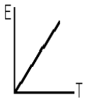
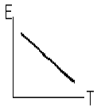
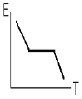
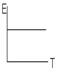
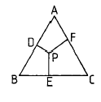
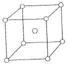
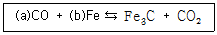
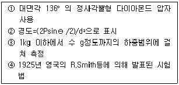

금속재료산업기사 (2004-09-05 기출문제)
1과목: 금속재료
1. 열간가공의 특징으로 틀린 것은?
- 방향성이 있는 주조조직의 제거
- 강괴 내부의 미세균열 압착
- 재질의 균일화
- 기공의 생성 촉진
(정답률: 62%)

2. 저 용융점 합금원소가 아닌 것은?
- Sn
- Pb
- Sb
- W
(정답률: 87%)
3. Ni-Cr강에서 헤어크랙(hair crack) 또는 프레이크(flake)를 일으키는 주 원소는?
- 산소
- 질소
- 수소
- 황
(정답률: 50%)
4. 경금속과 중금속의 비중을 구분하는 것으로 맞는 것은?
- 약 1
- 약 2
- 약 5
- 약 8
(정답률: 58%)
5. 금속 재료의 표시기호 중 SS400 의 명칭은?
- 일반구조용 압연강재
- 기계구조용 고탄소강재
- 일반 배관용 합금강재
- 구조용 주철재
(정답률: 42%)
6. 용접성이 좋으면서 연신율은 크고 강도가 낮은 탄소강을 선택하려 할 때 가장 적합한 탄소함량(%)은?
- 0.2
- 0.7
- 0.9
- 1.2
(정답률: 60%)
7. 페라이트 80%, 펄라이트 20%인 탄소강의 연신율은?
- 14%
- 25%
- 34%
- 48%
(정답률: 7%)
8. 심한가공이나 주조하여 만든 Cu합금은 사용 중 혹은 저장 중에 자연균열이 일어난다. 이 균열의 방지법으로 옳지 않는 것은?
- 230℃이하로 가열하여 응력을 제거한다.
- 표면에 아연도금을 한다.
- 표면에 도료를 칠한다.
- 암모니아가스 분위기 속에 저장해둔다.
(정답률: 79%)
9. 영구 자석강에 관한 설명이 틀린 것은?
- 영구 자석강에는 담금질 경화형, 석출 경화형, 미립자형 등이 있다.
- 마텐자이트 변태를 이용한 자석강을 담금질 경화형 영구 자석강이라 한다.
- 과포화 α 고용체에서의 석출경화를 이용한 자석강을 석출경화형 영구 자석강이라한다.
- 미립자형 영구 자석강은 철 금속산화물의 분말을 혼합하여 가압성형 소결한 것으로 저항값이 낮고 무겁다.
(정답률: 69%)
10. 순금속이 합금에 비하여 떨어지는 성질은?
- 융점
- 가단성
- 경도 및 강도
- 전도율
(정답률: 82%)
11. 인청동의 특징이 아닌 것은?
- 주석 청동 중에 보통 0.⑤~0.5%의 인을 함유한다.
- 내식성이 우수하다.
- 구리 합금 제조시 유동성이 나쁘다.
- 펌프부품, 기어, 화학기계용 부품에 사용된다.
(정답률: 38%)
12. 로울러 베어링(roller bearing)용 재료에 주로 사용 되는 것은?
- 저탄소 연강
- 고탄소 크롬강
- 저융점 쾌삭강
- 탈탄강
(정답률: 54%)
13. 가공경화된 강재가 가열조작에 의해 결정립의 모양이나 결정의 방향이 변하지 않고 내부응력만 감소하는 현상은?
- 재결정
- 성장
- 시효
- 회복
(정답률: 37%)
14. 섬유강화금속 복합재료의 표기로 맞는 것은?
- FRM
- CRP
- DRC
- BRR
(정답률: 67%)
15. 다음 중 비중이 가장 작은 것은?
- Na
- Fe
- Cu
- Al
(정답률: 34%)
16. 주철에 대한 설명으로 맞는 것은?
- 탄소(C)와 규소(Si)는 흑연화를 방해한다.
- 흑연화 현상은 용탕 중에 석출된 구리(Cu)만 편상으로 형성된다.
- 탄소당량(CE)은 탄소(C), 규소(Si), 인(P)등의 %에 의해 산출된다.
- 백주철의 응고시 흑연화가 많이 진행된다.
(정답률: 56%)
17. 상온에서 알루미늄합금의 결정구조는?
- 단순입방격자
- 체심입방격자
- 면심입방격자
- 조밀육방격자
(정답률: 41%)
18. 금속 엘린바(Elinvar)의 탄성률(E)과 온도(T) 변화와의 관계를 옳게 나타낸 것은?




(정답률: 24%)
19. 내열강에 대한 설명이 틀린 것은?
- 강의 내열성을 높이기 위해 첨가되는 주요 원소는 Cr, Si, Ni 등이 있다.
- 소량의 Mo과 W원소는 내식성을 향상 시킨다.
- 내열강에는 마텐자이트계, 오스테나이트계, 페라이트계 등이 있다.
- 발전용 가스터빈 및 제트엔진과 같이 고온강도, 내산화성이 더욱 요구되는 부품에는 오스테나이트계 내열강보다는 구상흑연주철이 많이 사용된다.
(정답률: 34%)
20. 희토류금속과 희유금속에 대한 설명이 틀린 것은?
- 미슈메탈(misch metal)은 Ce과 La, Nd 등의 희토류 원소를 함유하고 있다.
- Li은 비중이 1.74이며 용융점은 580℃이고 화학적으로 안전하다.
- Se은 반도체로 사용되는 것 이외에도 정류기, 광전용 기기의 재료 및 합금 원소로 사용된다.
- Cd은 베어링 메탈, 연납 등의 합금용으로 쓰이며 아말감(amalgam)은 치과용 재료로 사용된다.
(정답률: 38%)
2과목: 금속조직
21. 조밀입방격자를 하고 있는 순금속에서 최인접원자의 수는?
- 4
- 8
- 12
- 16
(정답률: 43%)
22. 강의 마텐자이트변태에 따른 Bain의 변형 이론에서 결정격자의 변화 순으로 맞는 것은?
- BCT→ BCC→ FCC
- HCP→ BCT→ BCC
- FCC→ BCT→ BCC
- BCC→ FCC→ BCT
(정답률: 50%)
23. 냉간가공에서 인발가공으로 철사 등에 생기는 1 차원적인 집합조직을 무엇이라고 하는가?
- 확산조직
- 산화조직
- 응력조직
- 섬유조직
(정답률: 8%)
24. 다음 그림에서 조성 P 합금의 C 성분량은?

- P-E
- P-F
- D-P
- B-E
(정답률: 알수없음)
25. 순철에서 격자상수와 온도관계와의 내용이 틀린 것은?
- 격자상수는 온도상승에 따라 팽창한다.
- 격자상수는 온도상승과 관련이 없다.
- 가열 및 냉각의 속도가 빠를수록 가열시 변태온도와 냉각시 변태온도의 차가 심하다.
- 가열 및 냉각의 속도가 늦을수록 가열시 변태온도와 냉각시 변태온도가 접근한다.
(정답률: 62%)
26. 과공석강이 오스테나이트로 부터 냉각하여 공석변태할 때 나타나는 주 조직은?
- Pearlite + Cementite
- Ferrite + Pearlite
- Martensite + Sorbite
- Austenite + Troostite
(정답률: 42%)
27. 서로 다른 금속 A와 B가 접촉하여 상호확산을 할 경우 A금속의 B금속에 대한 확산계수(DA)와 B 금속의 A 금속에 대한 확산계수(DB)는 서로 다르다는 사실과 관계된 것은?
- 바우싱거(Bauschinger) 효과
- 커켄덜(Kirkendall) 효과
- 코트렐(Cottrel) 효과
- Fick의 법칙
(정답률: 57%)
28. 고온에서 장시간 금속에 일정한 하중을 가하면서 시간에 따른 변형량을 시험하는 것은?
- 크리프시험
- 인장시험
- 쌍정시험
- 슬립시험
(정답률: 62%)
29. Martensite가 경도가 큰 이유가 아닌 것은?
- 결정의 미세화
- 급냉으로 인한 내부응력
- 탄소원자에 의한 Fe격자 강화
- 원래 원자위치로 원자의 확산
(정답률: 50%)
30. 양은(Nickel Silver)의 주 합금 원소는?
- Cu-Zn-Ni
- Ag-Fe-Ni
- Al-Si-Ni
- Pb-Mn-Ni
(정답률: 59%)
31. 그림과 같은 결정구조를 갖는 것은?

- 조밀입방격자
- 면심입방격자
- 체심입방격자
- 면심정방격자
(정답률: 알수없음)
32. 고온에서 전위의 재배열에 의한 회복현상은?
- Polygonization
- Cross-slip
- Frank-Read
- Cottrelleffect
(정답률: 10%)
33. 규칙-불규칙 변태와 무관한 것은?
- 자성 및 비열
- 전기저항
- X-Ray 회절
- 금속간 화합물
(정답률: 24%)
34. 칼날 전위에서 전위선의 전위로 맞는 것은?
- 버거스 벡터에 평행
- 버거스 벡터에 수직
- 원자의 잉여반면을 갖지 않는 경우
- 항상 수평 기호로 표시
(정답률: 79%)
35. A, B 양금속으로 된 합금의 규칙격자를 만드는 조성이 아닌 것은?
- CuZn
- AuCu
- Fe3C
- AuCu3
(정답률: 27%)
36. 다음 중 탄성율(E)을 나타내는 것은? (단, ε : 변율, σ : 응력 )
- E = σ / ε
- E = σ · ε
- E = ε / σ
- E = σ + ε
(정답률: 48%)
37. X선 회절을 이용하여 원자면간거리를 측정할 수 있는 계산식은? (단, θ 는 X선의 입사각, λ 는 X선의 파장, d는 원자면간거리, n은 정정수(正整數)임)
- 2dcosθ = nλ
- 2dtanθ = nλ
- 2dsinθ = nλ
- dsinθ = λ
(정답률: 알수없음)
38. 치환형 고용체 영역을 형성하는 인자가 아닌 것은?
- 용질과 용매 원자의 직경차가 용매 원자 직경의 15% 이내일 것
- 용질의 원자가가 용매의 것보다 작을 것
- 용질원자와 용매원자의 전기저항의 차가 작을 것
- 결정격자형이 동일하거나 비슷할 것
(정답률: 63%)
39. 다음 결합 중 반데르발스의 힘에 의한 결합은?
- 이온결합
- 공유결합
- 분자결합
- 금속결합
(정답률: 31%)
40. Fe-C 상태도에서 일어나는 반응 중 격자 변태가 아닌 자기변태는?
- A1 변태
- A2 변태
- A3 변태
- A4 변태
(정답률: 38%)
3과목: 금속열처리
41. 가공비 등 원가 절감을 고려한 철계 소결품의 열처리시 소결품에 대한 설명 중 틀린 것은?
- 표면이 다공성이므로 분위기에 주의해야 한다.
- 열전도도가 양호하다.
- 냉각속도가 느리다.
- 조직의 균일화를 위해 어닐링한다.
(정답률: 25%)
42. 마그네슘 합금의 열처리 중 강도를 증가시키고 최대의 인성과 충격 저항을 생기게 하는 열처리 방법으로 가장 적합한 것은?
- 석출 처리
- 인공 시효
- 풀림 처리
- 용체화 처리
(정답률: 38%)
43. 강을 담금질(qunching)하였을 때 나타나는 조직이 아닌것은?
- 마텐자이트
- 레데브라이트
- 트루스타이트
- 솔바이트
(정답률: 27%)
44. 열전대 중 가장 높은 온도를 측정할 수 있는 것은?
- B형(백금-로듐)
- K형(철-크로멜)
- T형(구리-콘스탄탄)
- J형(철-콘스탄탄)
(정답률: 60%)
45. 액체침탄법의 장점이 아닌 것은?
- 소량이면서 각종 품목의 처리에 적합하다.
- 침탄 얼룩이 적다.
- 강의 표면이 광휘상태로 얻어진다.
- 대형 부품의 침탄을 깊게 한다.
(정답률: 34%)
46. 고속도 공구강의 어닐링에 대한 내용으로 틀린 것은?
- A1점보다 20∼50℃ 높게한다.
- 승온은 빨리 해도 관계없다.
- 700℃ 부근까지 계단 어닐링 한다.
- 승온 후 두께 25mm 당 1시간 30분 정도 유지한다.
(정답률: 43%)
47. 흑심가단주철의 열처리에 대한 설명으로 옳지 않은 것은?
- 흑심가단주철의 제조는 흑연심을 목적으로 하여 백선을 열처리한다.
- 흑연화 기구는 시멘타이트의 직접분해와 탄소의 용해도 차에 의한 흑연의 석출 두 가지다.
- 제1단 흑연화 온도로 항온 유지함으로써 시멘타이트가 완전히 소실되었을 때는 어닐링을 하면 흑연화 된다.
- 탄소 주위만 흑연화하여 눈알처럼 페라이트가 템퍼링 탄소를 둘러싼 조직을 불스아이 조직이라 한다.
(정답률: 35%)
48. Al -Cu계 합금에서 과포화 고용체의 석출과정에 속하지 않는 것은?
- GP(I)존
- GP(Ⅱ)존
- θ '상
- α 상
(정답률: 58%)
49. 유기 액제를 노중의 피처리품에 적하시켜 생성된 분해 가스로 고온에서 침탄하는 적하(적주) 침탄법의 특징이 옳지 않은 것은?
- 같은 로에서 변성과 침탄을 할 수 없다.
- 변성로가 필요하지 않다.
- 설비가 소규모이다.
- 질화, 광휘 처리 등이 가능하다.
(정답률: 37%)
50. 열처리과정에서 나타나는 조직 중에서 부피의 변화가 가장 큰 것은?
- 오스테나이트
- 펄라이트
- 베이나이트
- 마텐자이트
(정답률: 67%)
51. 잔류 오스테나이트가 많아 사용시 치수의 변화를 가져올 때는 어떤 처리가 가장 좋은가?
- 고주파 담금질
- 심냉 처리
- 파텐팅 처리
- 항온 열처리
(정답률: 57%)
52. 두종류의 금속선 양단을 접합하고 접합점에 온도차를 부여하여 발생하는 열기전력을 사용한 온도계는?
- 전기저항 온도계
- 복사 온도계
- 열전대 온도계
- 광전 온도계
(정답률: 59%)
53. 열처리용 염욕으로 약 1300℃전, 후의 고온에서 사용되는 염으로 가장 적합한 것은?
- 알루미나
- 염화바륨
- 석회물
- 질산염
(정답률: 38%)
54. 강의 가스 순질화 열처리에 사용되는 가스로 가장 적합한 것은?
- H2
- NH3
- CH4
- C3H8
(정답률: 29%)
55. 경도가 가장 높은 열처리 조직은?
- 펄라이트
- 솔바이트
- 트루스타이트
- 마텐자이트
(정답률: 40%)
56. 담금질 전에 가공 등으로 조직의 불균일 제거 및 결정립을 미세화시켜 기계적 성질을 향상시키는 것은?
- 노말라이징
- 소결
- 전주
- 브레이징
(정답률: 53%)
57. 자동온도 제어 방식 중 오차가 가장 적게 열처리 온도를 제어하는 것은?
- On-off 제어
- P 제어
- PI 제어
- PID 제어
(정답률: 54%)
58. 담금질 후 인공시효를 나타내는 기호로 주조용 알루미늄 합금 열처리 중 가장 널리 사용되는 것은?
- T1
- T2
- T6
- T10
(정답률: 60%)
59. 다음과 같은 탄소강의 침탄시 침탄기구 반응식에 대하여 괄호 안에 들어갈 숫자로 맞는 것은?

- (a)=1, (b)=2
- (a)=2, (b)=3
- (a)=3, (b)=2
- (a)=2, (b)=1
(정답률: 28%)
60. 잔류오스테나이트를 0℃이하의 온도로 냉각하여 마텐자이트로 변태시키는 열처리는?
- 마르템퍼링처리
- 마르퀜칭처리
- 오스템퍼링처리
- 서브제로처리
(정답률: 64%)
4과목: 재료시험
61. 철강 재료에 사용하는 부식제로 가장 적합한 것은?
- 수산화나트륨 20g 과 물
- 질산1-5% 와 알콜용액
- 5% 염산 수용액
- 과황산 암모늄 10% 수용액
(정답률: 62%)
62. 만능인장시험기로 시험할 수 없는 것은?
- 연신률
- 단면수축률
- 경도, 취성시험
- 항복, 인장강도
(정답률: 65%)
63. 에릭슨시험에서 시험편의 호칭 및 치수에서 제2호 시험편은?
- 폭 90 ± 2mm밴드
- 변 90 ± 2mm정사각형
- 직경 90 ± 2mm원판형
- 직경 90 ± 2mm원형
(정답률: 15%)
64. 최근 경량화 재료의 개발이 활성화 되고 있다. 경(輕)강(强)화 재료의 평가에 비교 기준으로 사용되는 것은?
- 비례한도/항복강도
- 압축강도/탄성계수
- 인장강도/비중
- 압축강도/취성
(정답률: 50%)
65. 비파괴검사 중 내부의 결함을 측정하기에 적합한 것은?
- 누설검사
- 와류탐상
- 액체침투탐상
- 방사선투과시험
(정답률: 56%)
66. 다음은 어떤 경도시험에 관한 설명인가?

- Brinell
- Vickers
- Rockwell
- Shore
(정답률: 42%)
67. 피로강도에 미치는 인자의 영향 중 틀린 것은?
- 노치효과
- 온도
- 치수와 표면효과
- 시편의 색깔과 무게
(정답률: 58%)
68. 현미경 시료 채취법 중 틀린 것은?
- 조직시험의 시료는 중앙부와 끝부분으로부터 채취한다.
- 결함검사를 위한 시료는 결함이 발생된 곳에서 부터 가까운 부분을 취한다.
- 단조가공한 것은 가공방향에 주의하고 종단면, 횡단면 모두 시험할 수 있게 한다.
- 냉간압연한 것은 시료의 가공방향과 수직이 되게 한다.
(정답률: 16%)
69. 현미경 조직검사의 설명 중 틀린 것은?
- 현미경으로 관찰하려면 표면부식을 한다
- 크리프한도를 측정할 수 있다.
- 표면은 연마를 해야 한다
- 미세조직 검경의 상용 배율은 400 정도이다
(정답률: 55%)
70. 표점거리가 100mm이고 연신된 길이가 120mm일 때 연신율(%)은?
- 20
- 40
- 60
- 80
(정답률: 63%)
71. 와전류 탐상 시험의 특징이 아닌 것은?
- 시험의 결과가 직접적으로 구해지므로 시험의 자동화를 할 수 있다.
- 비접촉 방법이므로 시험속도가 느리다.
- 표면 결함의 검출에 적합하다.
- 결함, 재질 및 치수변화 등의 시험적용이 가능하다.
(정답률: 42%)
72. 철강재료의 불꽃시험의 안전 및 유의 사항이 틀린 것은?
- 연삭 숫돌을 갈아 끼울 때에는 숫돌 바퀴의 이상유무를 확인한 다음 고정한다.
- 불꽃시험을 할 때에는 반드시 보안경을 착용하여야 한다.
- 연마 도중 시험편을 놓치지 않도록 한다.
- 회전하는 연삭기는 손이나 공구로 정지시켜야 한다.
(정답률: 72%)
73. 금속 재료 충격 시험편의 길이와 높이 및 나비의 치수(mm)가 맞는 것은?
- 22, 5, 5
- 55, 10, 10
- 60, 15, 15
- 75, 20, 20
(정답률: 34%)
74. 피로파괴를 구하는 것과 관련이 없는 것은?
- 반복횟수
- S-N 선도
- 소성시험
- 내구한도
(정답률: 37%)
75. 금속재료에 존재할 수 있는 내부결함의 유무를 확인하기 위하여 초음파 탐상기를 사용하고자 할 때 주의해야 될 사항이 아닌 것은?
- 수침법으로 탐상할 경우에 검사면과 탐촉자를 강하게 밀착시켜야 한다.
- 검사면과 탐촉자(Probe) 사이에는 접촉매질을 적용해야 한다.
- 탐상전에 Al 표준시험편 등으로 탐상기의 상태를 조정해야 한다.
- 탐상기와 탐촉자를 연결하는 동축 케이블은 접거나 무리하게 잡아 당기지 않도록 한다.
(정답률: 62%)
76. B스케일과 C케일이 있는 경도계는?
- 비커스 경도계
- 브리넬 경도계
- 로크웰 경도계
- 쇼어 경도계
(정답률: 58%)
77. 비틀림 모멘트를 측정하는 방법이 아닌 것은?
- 진자식
- 탄성식
- 레버식
- 전자진공식
(정답률: 44%)
78. 크리프 곡선의 단계별 현상 중 변형이 증가하면서 경화 작용이 되는 단계는?
- 1단계
- 2단계
- 3단계
- 4단계
(정답률: 22%)
79. 침투탐상검사를 수행할 때의 공정이 아닌 것은?
- 산화처리
- 유화처리
- 세정처리
- 현상처리
(정답률: 20%)
80. 초음파 탐상기의 부속설비 및 구조에 속하지 않는 것은?
- 탈자기
- 브라운관
- 진동자
- 탐촉자
(정답률: 50%)